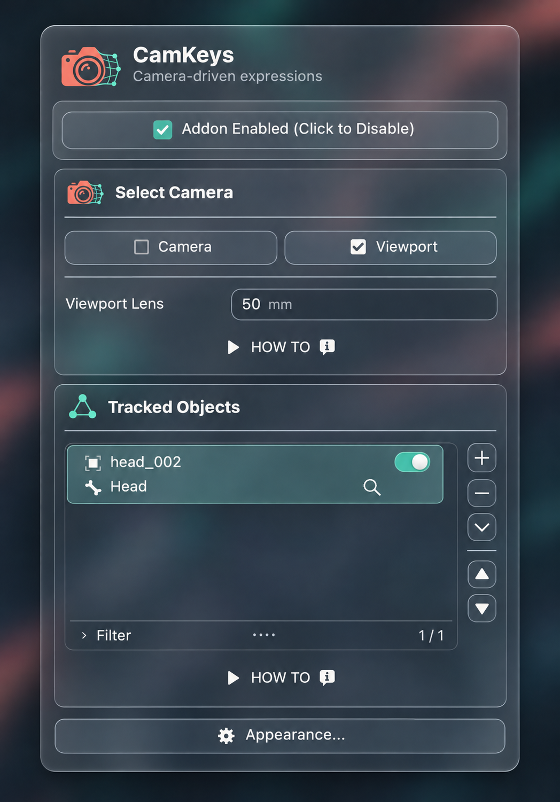
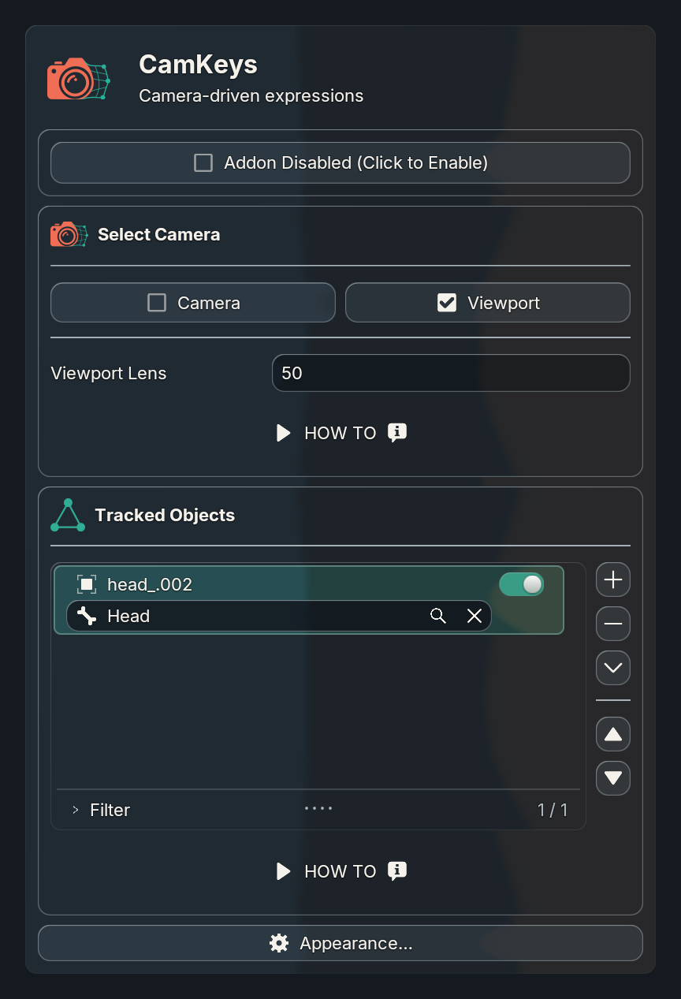
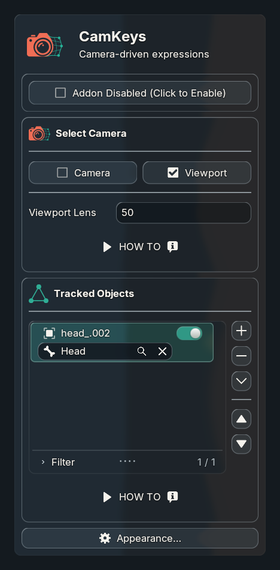
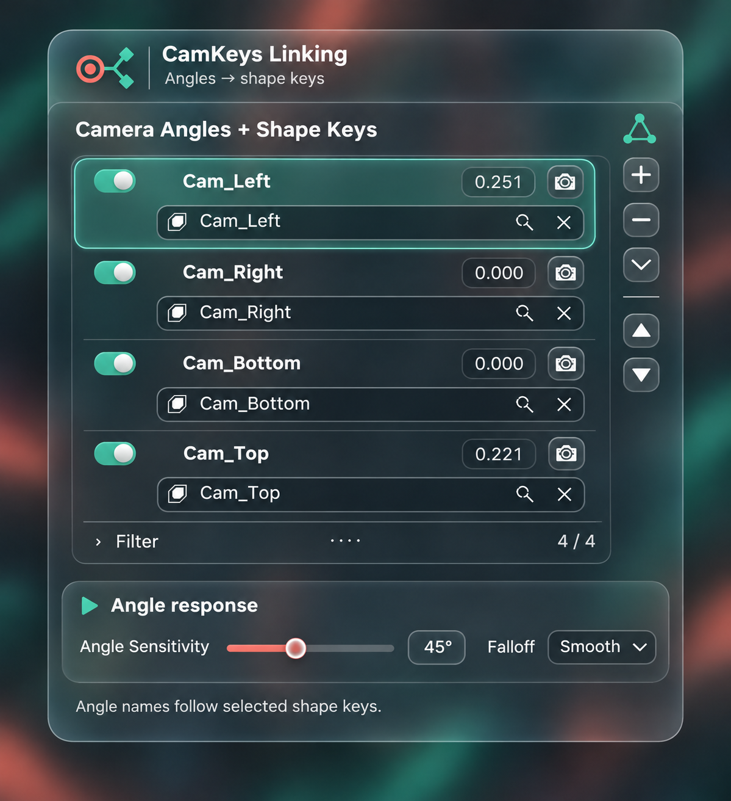
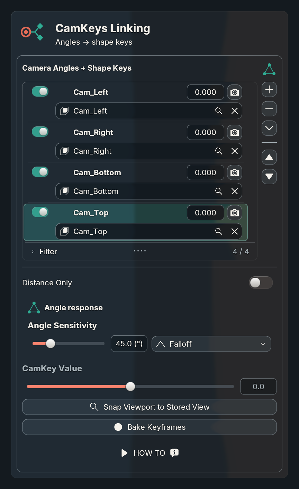
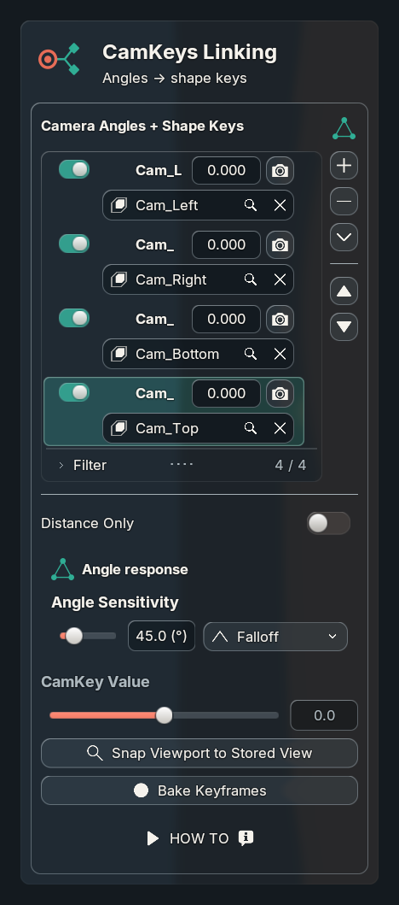
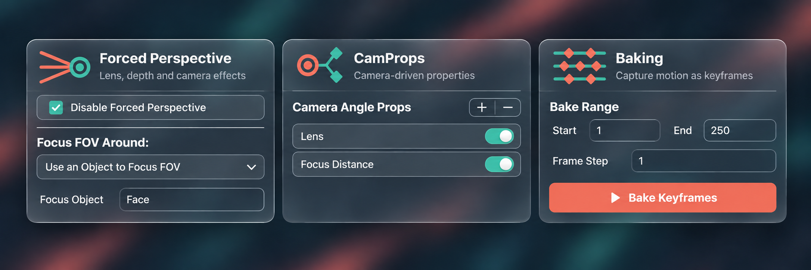
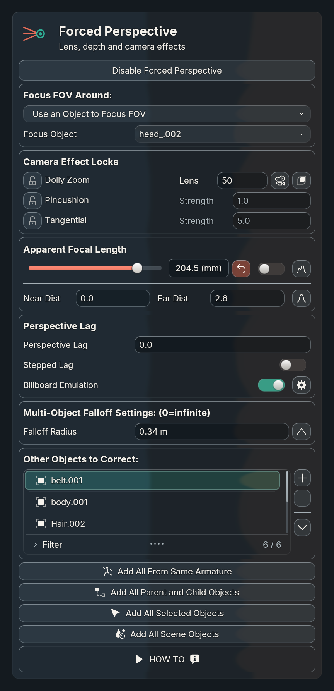
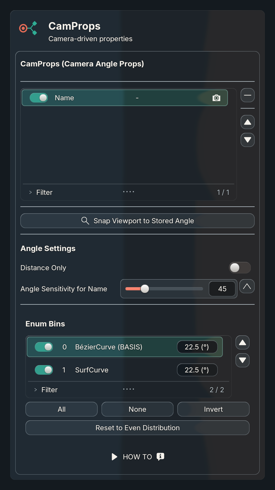
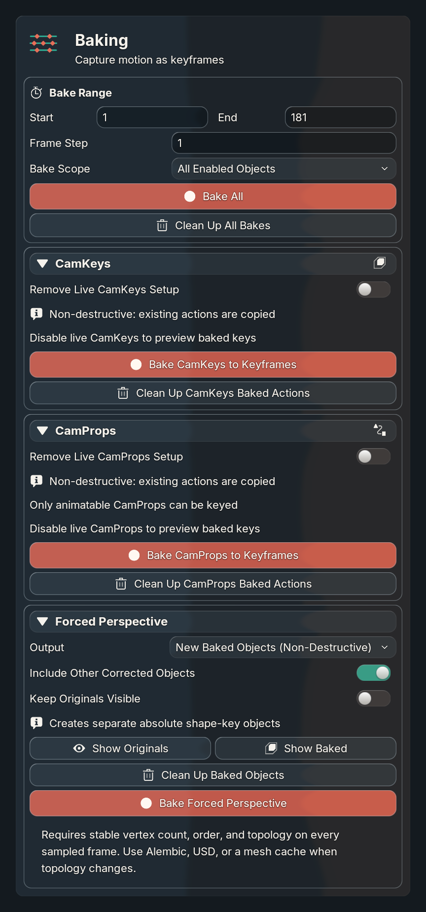

Generated designs first, then actual Blender implementation. Transparent morphing-camera logo and four section icons; reusable Beyond UI header and artwork APIs. New angles retain “Angle N” until a valid shape-key selection names them. Live Uraraka reloaded without saving or changing scene data.
381 unit tests pass. Naming/lifecycle verified on Blender 5.1.2 and 5.2.2; Metal GPU captures at 1×, 1.5× and 2×. Evidence and limits · Integration API · Overview / estimate
Reference and capture states differ: source object names, live values, selections and backdrop are retained. At narrow widths, top-row names truncate to preserve value and capture controls; the full names remain in their search rows. These are close layout comparisons, not pixel-exact matches. Captures use a disposable copy of the saved Uraraka scene with evaluation disabled; zero values do not represent the active session.










All native source search/capture controls remain. Branding uses two retained textures; headings, gutters and icon sizes are configured through shared APIs. Glass, motion and context routing retain the existing implementation.